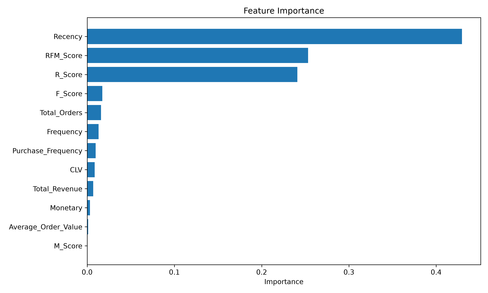
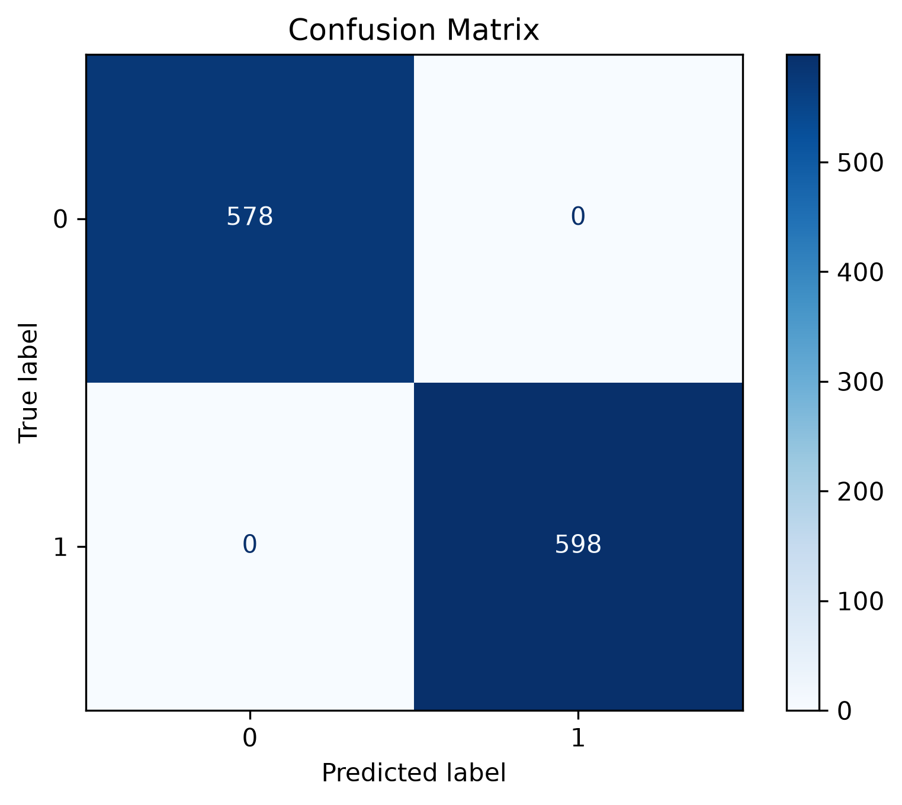
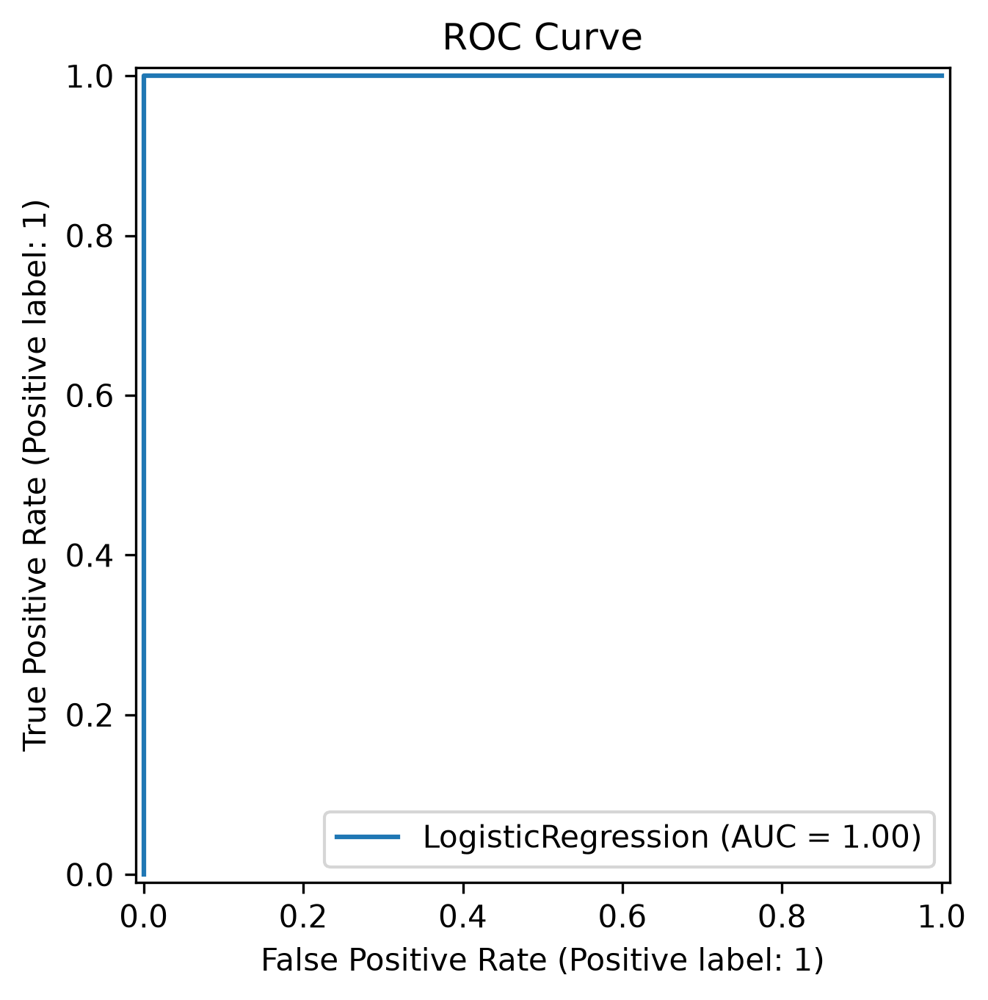

Objective
Improve customer churn prediction through hyperparameter tuning, model comparison and model explainability.
Dataset Overview
- Dataset : Customer Features
- Target : Churn
- Features : 12
- Train/Test Split : 80/20
- Algorithm : Logistic Regression, Random Forest, Gradient Boosting
Hyperparameter Tuning
- C: 0.01
- Solver: lbfgs
- Penalty: l2
- Max Iterations: 500
Model Comparison
| Model | Accuracy | Precision | Recall | F1 Score |
|---|---|---|---|---|
| Logistic Regression | 1.0 | 1.0 | 1.0 | 1.0 |
| Random Forest | 1.0 | 1.0 | 1.0 | 1.0 |
| Gradient Boosting | 1.0 | 1.0 | 1.0 | 1.0 |
Feature Importance

Observation: Recency, RFM Score and R Score are the most influential features.
Business Insight: Customers who have not purchased recently are most likely to churn.
SHAP Summary Plot

SHAP explains the contribution of every feature to individual predictions.
SHAP Feature Importance

The bar plot ranks features according to their average impact on predictions.
Confusion Matrix

ROC Curve

Key Business Insights
- Recent customer activity is the strongest predictor of churn.
- RFM Score is highly effective in customer segmentation.
- Customers with low purchase frequency require targeted retention strategies.
- Feature engineering significantly improved model performance.
Recommendations
- Monitor inactive customers regularly.
- Launch personalized retention campaigns.
- Reward loyal customers.
- Retrain the model periodically with new customer data.
Conclusion
The project successfully improved churn prediction using feature engineering, hyperparameter tuning and explainable AI techniques. The developed model demonstrates excellent predictive performance and provides actionable business insights.